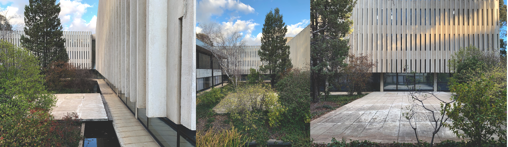

Architecture - The Innovation of Robin Boyd
Robin Gerard Penleigh Boyd (1919-1971) was a nationally and internationally renowned architect. He was also widely published and appreciated as an architectural critic. In 1953 Robin Boyd, Roy Grounds and Frederick Romberg formed the practice of Grounds, Romberg and Boyd which became a leading architectural firm in Melbourne. The firm also practiced extensively in Canberra.
Churchill House is a good example of the Late Twentieth Century Brutalist style, (1960-), displaying several key features as follows:
- Large areas of blank wall, especially the west wall of the south wing.
- Off-form concrete, such as the west wall of the south wing and the spandrels to the south and east wings.

In addition, it displays a number of the other features of this style including: sloping structural fins, precast concrete non-loadbearing wall panels, precast fins for sun protection, and vertical slit windows. Churchill House is one of several Canberra examples of this style, and one of only two which display a restrained form reflecting, perhaps, a more conservative approach to the style because of the intended office use.
The architecture of this building may contribute to the education of designers in their understanding of Late Twentieth-Century Architectural Styles.
Churchill House has interest for its association with the prominent architect, Robin Boyd. The building was his last major commission.
His architectural work is mostly known through his residential designs. He was known for his ability to design houses that would meet client needs, solve site problems and still retain architectural integrity. The designs were heavily influenced by the functional and international styles of architecture and became known as the Melbourne Regional style. It was light, simple and elegant and unmistakably modern. (Architecture Today 1972; Saunders 1972; and Serle 1995) Boyd’s residential designs that are registered on the ACT Heritage Register include: - Manning Clark’s House, 11 Tasmania Circle, Forrest (1952); - Fenner House, 8 Monaro Crescent, Red Hill (1953); and - Eltringham House, 12 Marawa Place, Aranda (1968-69). He is also credited with the following designs in the ACT: - Dr Hilary Roche House, Bedford Street, Deakin (1954); - Zoology building ANU (1961); - three houses in Vasey Crescent, Campbell (1961) (Grounds & Boyd); - W G Verge House, 204 Monaro Crescent, Red Hill (1963); - 204 Monaro Crescent, Red Hill (1964); and - Zoology Building ANU (1963-8). In the 1960s he started to move away from the glass box functionalism of the International and Melbourne Regional styles arguing that it had a limited range of expression and instead tried, somewhat unsuccessfully, to land large prestigious commissions for advanced high-rise buildings. He submitted many designs, but few were successful. Those that he did win tended to be of a more moderate size, such as the Menzies College at La Trobe University or Churchill House. Taylor (1990:80) notes that Boyd’s interest in Brutalism was heavily influenced by his travels in Japan and he became known as the chief advocate in Australia for the “vigorous, concrete buildings of post-war Japan”, but goes on to note that his own attempts at major Brutalist designs show “...a somewhat crude, unexpressive, Brutalist aesthetic.